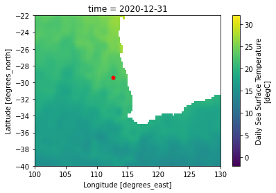
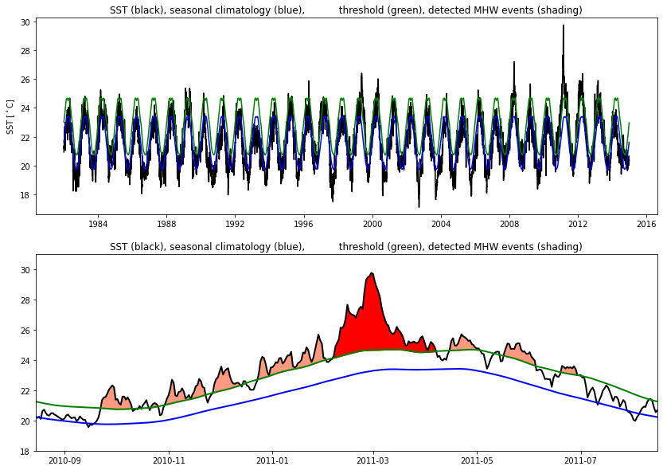
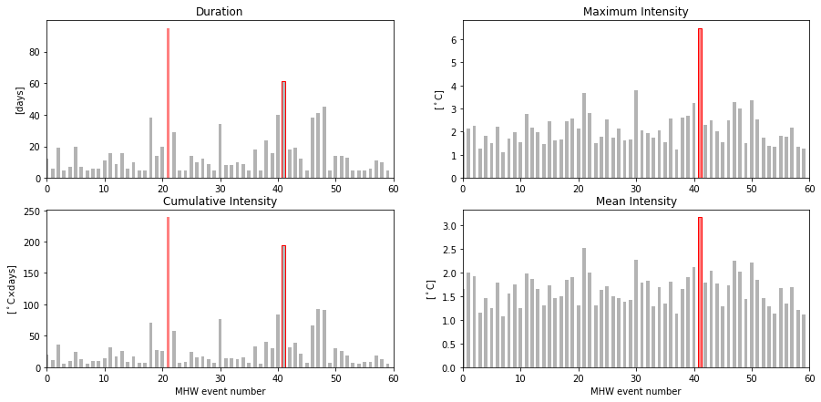

Case study #1: 2011 Western Australia
Contents
# Load required modules
import numpy as np
from datetime import date
from matplotlib import pyplot as plt
import xarray as xr
import sys
# Load marineHeatWaves definition module
import marineHeatWaves as mhw
sys.path.append('../misc/')
from misc import get_ij
base_url = 'https://psl.noaa.gov/thredds/dodsC/Datasets/noaa.oisst.v2.highres/'
files = [f'{base_url}sst.day.mean.{year}.v2.nc' for year in range(1981, 2021)]
#files
#https://psl.noaa.gov/thredds/dodsC/Datasets/noaa.oisst.v2.highres/sst.day.mean.1984.v2.nc.html
%%time
data = xr.open_mfdataset(files)
CPU times: user 503 ms, sys: 61 ms, total: 564 ms
Wall time: 28.6 s
Case study #1: 2011 Western Australia#
Plot a lat and lon#
In this case, we will visualize a point from Western Australia (WA; 112.5 ∘ E, 29.5 ∘ S) over the 1982 to 2014 period.
%matplotlib inline
dummy = data.sst.sel(lon = 112.5, lat = -29.5, method='nearest')[0]
fig, ax = plt.subplots(1,1)
data.sst[-1,:].plot(ax=ax, vmin=-2,vmax=32)
ax.plot(dummy.lon.values, dummy.lat.values, color='r', ms=5,marker='o')
ax.set_xlim(100,130)
ax.set_ylim(-40,-22);

Load the data#
Daily time series of SST (from the same point used above) remotely-sensed from the AVHRR satellite platform
Uncomment to run full function but see below to save time
#%%time
#wa_ds = data.sst.sel(lon = 112.5, lat = -29.5,
#method='nearest').sel(time = slice("1982-01-01","2014-12-31")).load()
#wa_ds.to_netcdf('wa_ds.nc')
#Uncomment line below to start from here
wa_ds=xr.open_dataset('wa_ds.nc').sst
wa_ds.plot()
[<matplotlib.lines.Line2D at 0x2b265b492260>]
Run MHW detection algorithm#
Next we run the MHW detection algorithm which returns the variable mhws, consisting of the detected MHWs, and clim, consisting of the climatological (varying by day-of-year) seasonal cycle and extremes threshold:
# Generate time vector using datetime format (January 1 of year 1 is day 1)
t = np.arange(date(1982,1,1).toordinal(),date(2014,12,31).toordinal()+1)
dates = [date.fromordinal(tt.astype(int)) for tt in t]
# Detect MHW events
mhws_case1, clim_case1 = mhw.detect(t, wa_ds.values)
# This algorithm has detected the following number of MHW events:
mhws_case1['n_events']
60
#uncomment the line below to view the duration of each event
#mhws_case1['duration']
#uncomment the line below to view the mean intensity of each event
#mhws_case1['intensity_mean']
Let’s have a look at some properties associated with the event that has the largest maximum intensity#
ev = np.argmax(mhws_case1['intensity_max']) #Largest event
print ('Maximum intensity:', mhws_case1['intensity_max'][ev], 'deg. C')
print ('Average intensity:', mhws_case1['intensity_mean'][ev], 'deg. C')
print ('Cumulative intensity:', mhws_case1['intensity_cumulative'][ev], 'deg. C-days')
print ('Duration:', mhws_case1['duration'][ev], 'days')
print ('Start date:', mhws_case1['date_start'][ev].strftime("%d %B %Y"))
print ('End date:', mhws_case1['date_end'][ev].strftime("%d %B %Y"))
Maximum intensity: 6.483709366090839 deg. C
Average intensity: 3.176277888886581 deg. C
Cumulative intensity: 193.75295122208144 deg. C-days
Duration: 61 days
Start date: 06 February 2011
End date: 07 April 2011
This turns out to be the infamous 2011 MHW off WA.
Let’s plot the SST time series over the full record and also have a closer look at the identified MHW event:#
plt.figure(figsize=(14,10))
plt.subplot(2,1,1)
# Plot SST, seasonal cycle, and threshold
plt.plot(dates, wa_ds.values, 'k-')
plt.plot(dates, clim_case1['thresh'], 'g-')
plt.plot(dates, clim_case1['seas'], 'b-')
plt.title('SST (black), seasonal climatology (blue), \
threshold (green), detected MHW events (shading)')
#plt.xlim(t[0], t[-1])
plt.ylim(wa_ds.min()-0.5, wa_ds.max()+0.5)
plt.ylabel(r'SST [$^\circ$C]')
plt.subplot(2,1,2)
# Find indices for all ten MHWs before and after event of interest and shade accordingly
for ev0 in np.arange(ev-10, ev+11, 1):
t1 = np.where(t==mhws_case1['time_start'][ev0])[0][0]
t2 = np.where(t==mhws_case1['time_end'][ev0])[0][0]
plt.fill_between(dates[t1:t2+1], wa_ds[t1:t2+1], clim_case1['thresh'][t1:t2+1], \
color=(1,0.6,0.5))
# Find indices for MHW of interest (2011 WA event) and shade accordingly
t1 = np.where(t==mhws_case1['time_start'][ev])[0][0]
t2 = np.where(t==mhws_case1['time_end'][ev])[0][0]
plt.fill_between(dates[t1:t2+1], wa_ds[t1:t2+1], clim_case1['thresh'][t1:t2+1], \
color='r')
# Plot SST, seasonal cycle, threshold, shade MHWs with main event in red
plt.plot(dates, wa_ds, 'k-', linewidth=2)
plt.plot(dates, clim_case1['thresh'], 'g-', linewidth=2)
plt.plot(dates, clim_case1['seas'], 'b-', linewidth=2)
plt.title('SST (black), seasonal climatology (blue), \
threshold (green), detected MHW events (shading)')
#plt.xlim(mhws['time_start'][ev]-150, mhws['time_end'][ev]+150)
#plt.ylim(clim_case1['seas'].min() - 1, clim_case1['seas'].max() + mhws_case1['intensity_max'][ev] + 0.5)
#plt.ylabel(r'SST [$^\circ$C]')
plt.xlim(date(2010,8,15), date(2011,8,15))
plt.ylim(18,31);

plt.figure(figsize=(15,7))
# Duration
plt.subplot(2,2,1)
evMax = np.argmax(mhws_case1['duration'])
plt.bar(range(mhws_case1['n_events']), mhws_case1['duration'], width=0.6, \
color=(0.7,0.7,0.7))
plt.bar(evMax, mhws_case1['duration'][evMax], width=0.6, color=(1,0.5,0.5))
plt.bar(ev, mhws_case1['duration'][ev], width=0.6, edgecolor=(1,0.,0.), \
color='none')
plt.xlim(0, mhws_case1['n_events'])
plt.ylabel('[days]')
plt.title('Duration')
# Maximum intensity
plt.subplot(2,2,2)
evMax = np.argmax(mhws_case1['intensity_max'])
plt.bar(range(mhws_case1['n_events']), mhws_case1['intensity_max'], width=0.6, \
color=(0.7,0.7,0.7))
plt.bar(evMax, mhws_case1['intensity_max'][evMax], width=0.6, color=(1,0.5,0.5))
plt.bar(ev, mhws_case1['intensity_max'][ev], width=0.6, edgecolor=(1,0.,0.), \
color='none')
plt.xlim(0, mhws_case1['n_events'])
plt.ylabel(r'[$^\circ$C]')
plt.title('Maximum Intensity')
# Mean intensity
plt.subplot(2,2,4)
evMax = np.argmax(mhws_case1['intensity_mean'])
plt.bar(range(mhws_case1['n_events']), mhws_case1['intensity_mean'], width=0.6, \
color=(0.7,0.7,0.7))
plt.bar(evMax, mhws_case1['intensity_mean'][evMax], width=0.6, color=(1,0.5,0.5))
plt.bar(ev, mhws_case1['intensity_mean'][ev], width=0.6, edgecolor=(1,0.,0.), \
color='none')
plt.xlim(0, mhws_case1['n_events'])
plt.title('Mean Intensity')
plt.ylabel(r'[$^\circ$C]')
plt.xlabel('MHW event number')
# Cumulative intensity
plt.subplot(2,2,3)
evMax = np.argmax(mhws_case1['intensity_cumulative'])
plt.bar(range(mhws_case1['n_events']), mhws_case1['intensity_cumulative'], width=0.6, \
color=(0.7,0.7,0.7))
plt.bar(evMax, mhws_case1['intensity_cumulative'][evMax], width=0.6, color=(1,0.5,0.5))
plt.bar(ev, mhws_case1['intensity_cumulative'][ev], width=0.6, edgecolor=(1,0.,0.), \
color='none')
plt.xlim(0, mhws_case1['n_events'])
plt.title(r'Cumulative Intensity')
plt.ylabel(r'[$^\circ$C$\times$days]')
plt.xlabel('MHW event number');

# Rank this MHW event
rank, returnPeriod = mhw.rank(t, mhws_case1)
print ("The 2011 WA event is ranked number " \
+ str(rank['duration'][ev]) + " by duration")
print ("The 2011 WA event is ranked number " \
+ str(rank['intensity_max'][ev]) + " by maximum intensity")
print ("The 2011 WA event is ranked number " \
+ str(rank['intensity_mean'][ev]) + " by mean intensity")
print ("The 2011 WA event is ranked number " \
+ str(rank['intensity_cumulative'][ev]) + " by cumulative intensity")
The 2011 WA event is ranked number 2 by duration
The 2011 WA event is ranked number 1 by maximum intensity
The 2011 WA event is ranked number 1 by mean intensity
The 2011 WA event is ranked number 2 by cumulative intensity